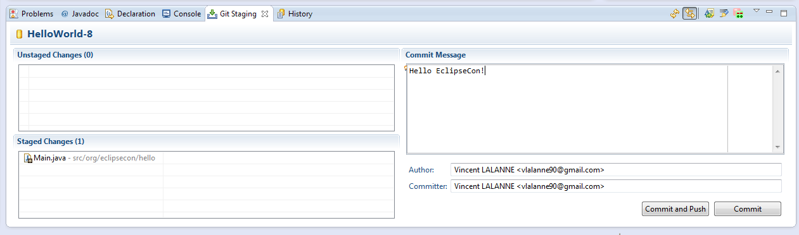
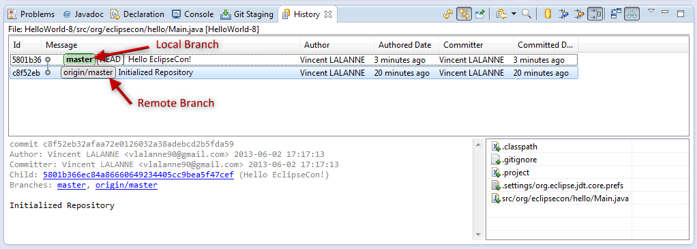
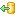
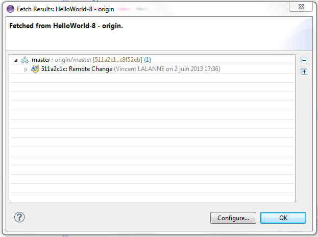
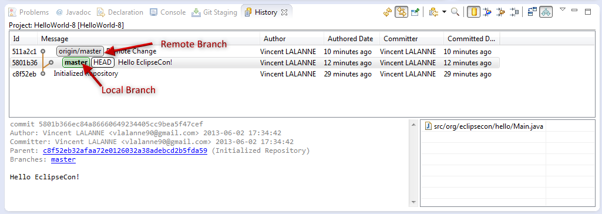
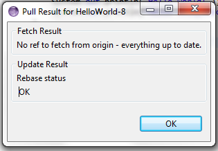
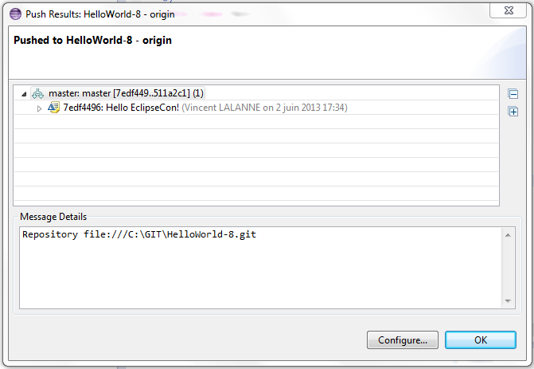

- Download, unzip and clone the HelloWorld-8.git.zip.
remote repository - Add the line:
System.out.println("Hello EclipseCon!");to theMain.javafile - Commit this change
 - Go to the History view. It should look like this:
 - Click on
HelloWorld-8 > Team >  Fetch from Upstream. A pop-up window will appear listing all remote changes
Note
TheFetch ...item allows more fetch options but for a simple fetch theFetch from Upstreamitem is sufficient. - The History view should now look like this:

The local and remotemasterbranches have diverged - Click on
HelloWorld-8 > Team >to incorporate the remote changes in your local branch. A pop-up window will appear listing all remote changes Pull
Pull
Note
You can bypass the fetch action, it is always executed before a pull. - Click on
HelloWorld-8 > Team >. A pop-up window will appear detailing what has been uploaded. Push to Upstream
Push to Upstream
Warning
You can only push a branch when it is ahead of its remote counterpart.
To be sure of this, you should always pull before pushingNote
The
Note
The exercise uses a single branch,
however all the actions detailed earlier to uses several branches
will also work in remote workflows.